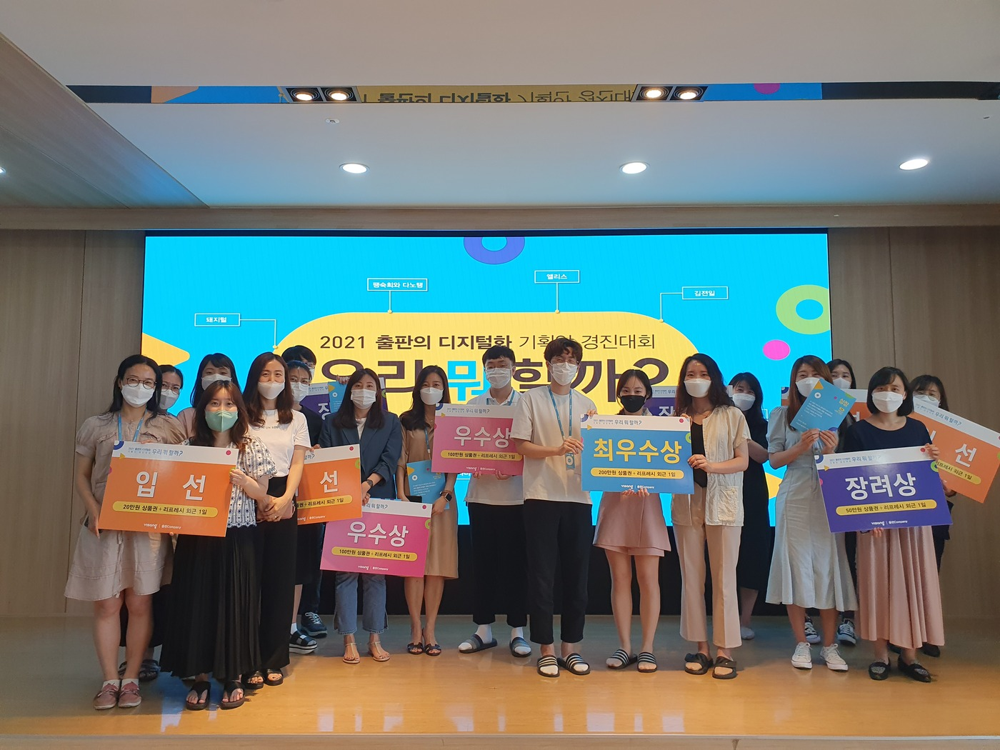

Projects로 돌아가기
수상 / 기획
출판의 디지털화 기획안 경진대회
사내 출판의 디지털화를 도모하기 위한 구독형 서비스 및 메타버스 플랫폼 기획안 발표
기획
메타버스
구독 서비스
디지털화
수상

2021 출판의 디지털화 기획안 경진대회 최우수상 시상식
수상 정보
- 수상: 2021 출판의 디지털화 기획안 경진대회 최우수상 (비상교육)
- 연도: 2021년
기획 내용
구독형 서비스 기획
- 기존 콘텐츠 자산을 활용한 구독 모델 설계
- 사용자 세그먼트별 콘텐츠 큐레이션 전략
메타버스 공유 플랫폼
- 과학 실험·탐구 활동을 가상공간에서 구현
- 교사·학생 간 콘텐츠 공유 및 협업 플랫폼 구축
의의
- 단순 교재 개발에서 플랫폼 기획으로 역량 확장
- 디지털 전환 시대의 출판 비즈니스 모델 제시